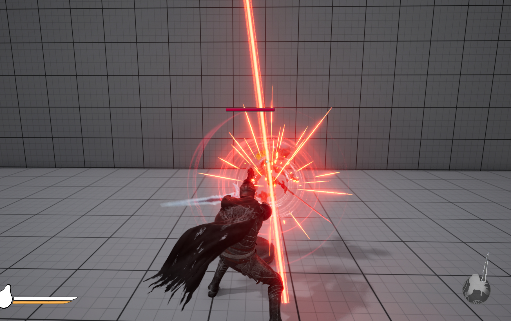

Gameplay Features
Tutorial

The tutorial area is designed to help familiarize the player with game controls and mechanics.
Weapons
Selection of weapon types with unique combat styles, enhancing gameplay variety.
Blocking
Blocking allows player to reduce incoming attack damage at a cost of stamina or fully deflect all damage with perfectly timed parries.
Execution
Enemies can be dismembered during combat, creating cinematic execution moments that enhance immersion.
Healing
Healing is a scarce resource that can be used only a few times. Once fully depleted, the player can regain additional uses through combat.
Checkpoint
Players can save their progress and respawn at designated checkpoints scattered throughout the game world.